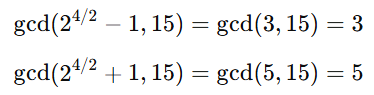
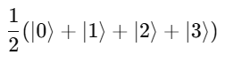
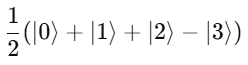
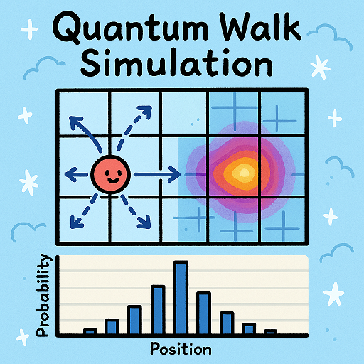

Quantum Computing
Unlike classical bits, which represent either 0 or 1, quantum bits - qubits (1) - can exist in multiple states simultaneously, exponentially increasing processing power for certain tasks. Quantum computing harnesses the principles of quantum mechanics — superposition, entanglement, and quantum interference (2) — to perform computations that are infeasible for classical computers. This allows quantum computers to solve complex problems in cryptography, optimization, and material science at unprecedented speeds.
Algorithms like Shor’s for factoring large numbers and Grover’s for searching unsorted data showcase quantum speedup, making quantum computing a disruptive force in fields requiring massive parallelism and probabilistic computation. However, challenges in qubit stability, error correction, and scalability still limit practical applications.
This topic is an educational tutorial on what we might expect from quantum applications, simulating quantum algorithms in C++ where we can. The references to college-level math are frequent and can be somewhat overwhelming - hopefully running the simulations will make things clearer - the long-term implications for brute-force computing are daunting!
Quantum Algorithms
Quantum computing is much easier to understand with a deep dive into some specific algorithms.
- Note
-
The code in this tutorial was written and tested using Microsoft Visual Studio (Visual C++ 2022, Console App project) with Boost version 1.88.0.
The Shor Algorithm
Shor’s algorithm is a quantum algorithm designed to factor large numbers efficiently, making it a potential threat to classical cryptographic systems like RSA. It leverages quantum mechanics to find the period of a function, which classical methods struggle with. In short, given an integer N, the goal is to find its prime factors:
-
Choose a random number
asuch that1 < a < N. Note that ifgcd(a,N) = 1, then we already found a factor. -
Compute the order
rofa modulo N, that is, find the smallestrsuch that:a^r ≡ 1 mod N. This is done efficiently using quantum phase estimation (3). -
Check if
ris even. Ifris odd, restart with a differenta. -
Compute
gcd(a^(r/2) - 1, N)andgcd(a^(r/2) + 1, N). If either result is a nontrivial factor, we’re done.
- Notes
-
The function
gcdis the greatest common divisor. The quantum advantage comes from step 2, where a Quantum Fourier Transform - or QFT (4) - is used to efficiently determine the orderr. The quantum computer prepares a superposition of states, applies modular exponentiation as a quantum operation, and then uses QFT to extractr.
Probably easier to understand with an example, lets compute factors with N = 15:
-
Randomly choose
a = 2. -
Find the order
rsuch that2^r ≡ 1 mod 15. The smallest suchris 4. -
Since
ris even, compute:
-
Found factors: 3 and 5.
Shor’s algorithm runs exponentially faster than the best-known classical factoring algorithms.
Let’s write a simulation of Shor’s algorithm that approximates its behavior using classical number theory techniques. Since true quantum computation requires a quantum computer, this version simulates the order-finding step using classical algorithms like modular exponentiation and the greatest common divisor (GCD).
#include <iostream>
#include <cmath>
#include <cstdlib>
#include <ctime>
using namespace std;
// Function to compute the greatest common divisor (GCD)
int gcd(int a, int b) {
while (b != 0) {
int temp = b;
b = a % b;
a = temp;
}
return a;
}
// Function for modular exponentiation: (base^exp) % mod
int mod_exp(int base, int exp, int mod) {
int result = 1;
base = base % mod;
while (exp > 0) {
if (exp % 2 == 1) { // If exp is odd
result = (result * base) % mod;
}
exp = exp >> 1; // Divide exp by 2
base = (base * base) % mod;
}
return result;
}
// Function to find the order r of a modulo N
int find_order(int a, int N) {
int r = 1;
int value = a;
while (value != 1) {
value = (value * a) % N;
r++;
if (r > N) return -1; // Fail-safe to avoid infinite loops
}
return r;
}
// Shor's algorithm simulation
void shors_algorithm(int N) {
if (N % 2 == 0) { // If even, trivially factor
cout << "Trivial factor: 2" << endl;
return;
}
srand(time(0)); // Seed for randomness
int a, r, factor1, factor2;
while (true) {
a = 2 + rand() % (N - 2); // Choose random a in range [2, N-1]
int gcd_val = gcd(a, N);
if (gcd_val > 1) {
cout << "Found factor (GCD check): " << gcd_val << endl;
return;
}
r = find_order(a, N);
if (r == -1 || r % 2 == 1) continue; // Ignore invalid or odd r
// Compute the factors
factor1 = gcd(mod_exp(a, r / 2, N) - 1, N);
factor2 = gcd(mod_exp(a, r / 2, N) + 1, N);
if (factor1 > 1 && factor2 > 1) {
cout << "Factors found: " << factor1 << " and " << factor2 << endl;
return;
}
}
}
// Main function
int main() {
int N;
cout << "Enter a number to factor: ";
cin >> N;
if (N <= 1) {
cout << "Invalid input. Please enter a number greater than 1." << endl;
return 0;
}
shors_algorithm(N);
return 0;
}If you compile and run this program, you should get output similar to the following:
Enter a number to factor: 15
Factors found: 3 and 5
Enter a number to factor: 21
Factors found: 3 and 7The order-finding step is deterministic instead of quantum-powered, making it slower for very large numbers. Our simulation works best for small numbers (say, less than 1000).
The Grover Algorithm
Grover’s algorithm is a quantum search algorithm that finds a target item in an unsorted database quadratically faster than classical methods. It was developed by Lov Grover in 1996 and is particularly powerful for problems that require brute-force search, such as breaking symmetric cryptographic hashes.
In a classical search: if you have an unsorted list of N elements, finding a specific item requires checking, on average, N/2 elements, and in the worst case, all N elements. This is O(N) complexity. In a quantum search: Grover’s algorithm finds the target in O(sqrt N) steps — which is way faster, especially with a large number of elements.
Grover’s algorithm enhances the probability of the correct solution using a technique called amplitude amplification through iterative applications of two main operations:
-
Oracle Function (Marking the Solution): A quantum function (black box) that inverts the amplitude of the correct answer. Or think of it as labeling the correct item with a negative phase.
-
Diffusion Operator (Amplitude Amplification): This boosts the amplitude of the marked item while reducing others. Acts like a "quantum reflection" across the average amplitude.
By applying these two steps O(sqrt N) times, the probability of measuring the correct answer approaches 100%.
Let’s explain with a trivial example, imagine searching for the number 3 in the list {0, 1, 2, 3}.
-
Start with an equal superposition of all four states:

-
The oracle flips the phase of the correct answer (let’s say
|3⟩):
-
The diffusion operator boosts the probability of
|3⟩by reflecting all amplitudes around their mean. -
After one iteration, the probability of measuring
|3⟩is nearly 100%.
In addition to the dubious purpose of cracking cryptographic hashes, this algorithm has the potential to solve NP-complete problems like 3-SAT (5), amd speed up graph search, pathfinding, and database lookups.
The following code simulates a quantum state as an array of probabilities, and assumes a small dataset - such as searching for 3 in {0,1,2,3,4,5,6,7}).
#include <iostream>
#include <vector>
#include <cmath>
#include <cstdlib>
#include <ctime>
using namespace std;
// Function to apply the oracle (mark the target state)
void applyOracle(vector<double>& state, int target) {
state[target] *= -1; // Flip the phase of the marked state
}
// Function to apply the diffusion operator (amplitude amplification)
void applyDiffusion(vector<double>& state) {
int N = state.size();
double avg = 0;
// Compute the average amplitude
for (double amp : state) avg += amp;
avg /= N;
// Reflect around the mean
for (double& amp : state) {
amp = 2 * avg - amp;
}
}
// Function to simulate Grover's algorithm
int groverSearch(int N, int target) {
vector<double> state(N, 1.0 / sqrt(N)); // Initialize equal superposition
int iterations = round(acos(sqrt(1.0/N)) / (2 * asin(sqrt(1.0/N)))); // O(√N)
for (int i = 0; i < iterations; i++) {
applyOracle(state, target); // Mark the target state
applyDiffusion(state); // Amplify the probability
}
// Measure the highest probability state
int maxIndex = 0;
for (int i = 1; i < N; i++) {
if (abs(state[i]) > abs(state[maxIndex])) {
maxIndex = i;
}
}
return maxIndex; // Return the most likely result
}
// Main function
int main() {
int N = 8; // Number of states (must be a power of 2)
int target = 3; // Element to search for
srand(time(0));
cout << "Searching for element: " << target << " in range [0, " << N-1 << "]..." << endl;
int result = groverSearch(N, target);
cout << "Grover's Algorithm found: " << result << endl;
return 0;
}A run of the program will give us:
Searching for element: 3 in range [0, 7]...
Grover's Algorithm found: 3One-dimensional Quantum Walks
A quantum walk is a version of random walks (traversing a graph), offering speedups in graph traversal. This is important for search algorithms and network analysis.
Unlike classical random walks, where a particle moves left or right with equal probability, quantum walks use superposition and interference, leading to a faster spread over the search space. The probability distribution in a quantum walk spreads quadratically faster than a classical random walk.
The following program simulates a discrete-time quantum walk using a coin flip (academically known as a Hadamard gate) to create superposition. Conditional movement is based on the coin’s state and there are interference effects that make quantum walks behave differently from classical ones.
The walker starts at position x = 0 - the middle of the array. It has an internal quantum coin state (spin |0⟩ or |1⟩), and the quantum coin flip (the Hadamard Gate) creates superposition, splitting into two paths: if coin is |0⟩, move left, if coin is |1⟩, move right.
Unlike a classical random walk (which results in a bell curve), quantum walks create two dominant peaks due to constructive and destructive interference.
This should be clearer by running a simulation.
#include <iostream>
#include <vector>
#include <cmath>
#include <complex>
using namespace std;
const int N = 21; // Number of positions (should be odd for symmetry)
const int STEPS = 10; // Number of quantum walk steps
using Complex = complex<double>; // Complex number type
using State = vector<vector<Complex>>; // Quantum state storage
// Hadamard coin operator
const Complex H[2][2] = {
{1 / sqrt(2), 1 / sqrt(2)},
{1 / sqrt(2), -1 / sqrt(2)}
};
// Function to apply the coin operator (Hadamard gate)
void apply_coin(State& psi) {
State new_psi = psi;
for (int pos = 0; pos < N; pos++) {
Complex left = psi[pos][0] * H[0][0] + psi[pos][1] * H[0][1];
Complex right = psi[pos][0] * H[1][0] + psi[pos][1] * H[1][1];
new_psi[pos][0] = left;
new_psi[pos][1] = right;
}
psi = new_psi;
}
// Function to apply the shift operator (move left or right)
void apply_shift(State& psi) {
State new_psi(N, vector<Complex>(2, 0));
for (int pos = 1; pos < N - 1; pos++) {
new_psi[pos - 1][0] += psi[pos][0]; // Left movement
new_psi[pos + 1][1] += psi[pos][1]; // Right movement
}
psi = new_psi;
}
// Function to compute probability distribution
vector<double> get_probabilities(const State& psi) {
vector<double> probabilities(N, 0);
for (int pos = 0; pos < N; pos++) {
probabilities[pos] = norm(psi[pos][0]) + norm(psi[pos][1]);
}
return probabilities;
}
// Main function
int main() {
State psi(N, vector<Complex>(2, 0)); // Initialize quantum state
psi[N / 2][0] = 1.0; // Start in the middle with |0⟩ spin state
cout << "Quantum Walk Simulation (" << STEPS << " steps)" << endl;
for (int step = 0; step < STEPS; step++) {
apply_coin(psi);
apply_shift(psi);
}
// Get probability distribution
vector<double> probabilities = get_probabilities(psi);
// Print results
for (int i = 0; i < N; i++) {
cout << "Position " << (i - N / 2) << ": " << probabilities[i] << endl;
}
return 0;
}If you run this code you will get something like:
Quantum Walk Simulation (10 steps)
Position -10: 0
Position -9: 0.0012
Position -8: 0.0041
Position -7: 0.0113
Position -6: 0.0264
Position -5: 0.0492
Position -4: 0.0795
Position -3: 0.1134
Position -2: 0.1421
Position -1: 0.1543
Position 0: 0.1421
Position 1: 0.1134
Position 2: 0.0795
Position 3: 0.0492
Position 4: 0.0264
Position 5: 0.0113
Position 6: 0.0041
Position 7: 0.0012
Position 8: 0
Position 9: 0The result shows the probability distribution of being at any one of the positions at the end of the walk.
Two-dimensional Quantum Walks
We can extend the quantum walk example to simulate a walker with an x,y position on a grid. Two coins are tossed: 00 - move left, 01 - move right, 10 - move up, 11 - move down.
This program simulates a 10 x 10 quantum grid and tracks the probability of the walker being at each position.
#include <iostream>
#include <vector>
#include <complex>
#include <cmath>
#include <iomanip>
using namespace std;
const int GRID_SIZE = 11; // Must be odd to center the walker
const int STEPS = 10; // Number of quantum walk steps
using Complex = complex<double>;
using State = vector<vector<vector<Complex>>>; // 2D grid with 2 coin states
// Hadamard gate for a 2-qubit coin (simplified)
const Complex H[2][2] = {
{1 / sqrt(2), 1 / sqrt(2)},
{1 / sqrt(2), -1 / sqrt(2)}
};
// Apply Hadamard gate to the coin state
void apply_coin(State& psi) {
State new_psi = psi;
for (int x = 0; x < GRID_SIZE; x++) {
for (int y = 0; y < GRID_SIZE; y++) {
Complex left = psi[x][y][0] * H[0][0] + psi[x][y][1] * H[0][1];
Complex right = psi[x][y][0] * H[1][0] + psi[x][y][1] * H[1][1];
new_psi[x][y][0] = left;
new_psi[x][y][1] = right;
}
}
psi = new_psi;
}
// Apply conditional movement based on coin state
void apply_shift(State& psi) {
State new_psi(GRID_SIZE, vector<vector<Complex>>(GRID_SIZE, vector<Complex>(2, 0)));
for (int x = 1; x < GRID_SIZE - 1; x++) {
for (int y = 1; y < GRID_SIZE - 1; y++) {
// Move left if coin state |0⟩
new_psi[x - 1][y][0] += psi[x][y][0];
// Move right if coin state |1⟩
new_psi[x + 1][y][1] += psi[x][y][1];
// Move up if coin state |0⟩
new_psi[x][y - 1][0] += psi[x][y][0];
// Move down if coin state |1⟩
new_psi[x][y + 1][1] += psi[x][y][1];
}
}
psi = new_psi;
}
// Compute probability distribution
vector<vector<double>> get_probabilities(const State& psi) {
vector<vector<double>> probabilities(GRID_SIZE, vector<double>(GRID_SIZE, 0));
for (int x = 0; x < GRID_SIZE; x++) {
for (int y = 0; y < GRID_SIZE; y++) {
probabilities[x][y] = norm(psi[x][y][0]) + norm(psi[x][y][1]);
}
}
return probabilities;
}
// Main function
int main() {
State psi(GRID_SIZE, vector<vector<Complex>>(GRID_SIZE, vector<Complex>(2, 0)));
int mid = GRID_SIZE / 2;
psi[mid][mid][0] = 1.0; // Start in the middle with |0⟩ spin state
cout << "2D Quantum Walk Simulation (" << STEPS << " steps)" << endl;
for (int step = 0; step < STEPS; step++) {
apply_coin(psi);
apply_shift(psi);
}
vector<vector<double>> probabilities = get_probabilities(psi);
// Print probability grid
for (int y = 0; y < GRID_SIZE; y++) {
for (int x = 0; x < GRID_SIZE; x++) {
cout << fixed << setprecision(3) << probabilities[x][y] << " ";
}
cout << endl;
}
return 0;
}If you run this code you will get something like:
2D Quantum Walk Simulation (10 steps)
0.000 0.001 0.002 0.003 0.005 0.003 0.002 0.001 0.000 0.000
0.001 0.004 0.009 0.016 0.027 0.016 0.009 0.004 0.001 0.000
0.004 0.011 0.022 0.040 0.067 0.040 0.022 0.011 0.004 0.001
0.009 0.022 0.045 0.079 0.133 0.079 0.045 0.022 0.009 0.002
0.016 0.040 0.079 0.139 0.233 0.139 0.079 0.040 0.016 0.003
...Again, the result shows the probability distribution of being at any one of the positions at the end of the 2D walk.

Other Quantum Algorithms
Other algorithms you might like to investigate include Variational Quantum Eigensolver (VQE) - which is a hybrid algorithm that finds the ground state energy of a molecule, and can be used in quantum chemistry (molecular simulation) and optimization problems.
To simulate in C++ consider implementing a gradient descent optimizer to simulate quantum variational circuits, and use classical matrix exponentiation to approximate Hamiltonian evolution - which refers to the time evolution of a quantum state under a Hamiltonian operator (the energy function of a system).
Another possibility - the Harrow-Hassidim-Lloyd (HHL) algorithm - solves large linear systems exponentially faster than classical methods, and can be applied in AI (machine learning), big data, finance and differential equations.
To simulate in C++ we should use classical numerical solvers (for example, Gaussian elimination, LU decomposition) and simulate quantum matrix inversion with iterative phase estimation.
Libraries
There are several Boost libraries that show potential for use in quantum computing, or in simulating quantum algorithms:
-
Boost.MultiArray : Quantum computations require multi-dimensional arrays for storing wavefunctions and operators. This library provides high-performance, multi-dimensional array support, say for storing quantum states (annotated as: “|ψ⟩” ) as high-dimensional arrays, or efficiently representing unitary matrices for quantum gates.
#include <boost/multi_array.hpp> using namespace boost; multi_array<std::complex<double>, 2> quantum_state(boost::extents[4][4]); -
Boost.Numeric/ublas : Quantum mechanics heavily relies on matrix operations (for example, unitary transformations, tensor products), and this library provides fast matrix and vector operations, ideal for quantum gate simulations. An example would be computing Quantum Fourier Transforms (QFT) and Grover’s diffusion operator.
#include <boost/numeric/ublas/matrix.hpp> #include <boost/numeric/ublas/vector.hpp> using namespace boost::numeric::ublas; matrix<std::complex<double>> hadamard(2, 2); -
Boost.Compute : Quantum simulations are computationally expensive, especially for large n-qubit systems. This library provides OpenCL-based GPU acceleration for quantum algorithms, such as parallelized quantum state evolution on GPUs, or accelerating quantum circuit simulation for Shor’s algorithm or Grover’s search.
#include <boost/compute.hpp> namespace compute = boost::compute; -
Boost.Random : Quantum systems often require true randomness (for example, simulating quantum measurement collapse or generating random phase shifts in quantum gates).
#include <boost/random.hpp> boost::random::mt19937 rng; boost::random::uniform_real_distribution<> dist(0, 1); double probability = dist(rng); -
Boost.Python : To bridge C++ and Python quantum libraries to allow seamless integration with frameworks like Qiskit or PennyLane. This could be for writing fast C++ quantum gate implementations and exposing them to Python, or perhaps using Qiskit for quantum execution while handling complex classical calculations in C++.
#include <boost/python.hpp> using namespace boost::python; BOOST_PYTHON_MODULE(my_quantum_module) { def("quantum_gate_sim", &quantum_gate_sim); }
-
Boost.Graph : Quantum circuits can be represented as directed acyclic graphs (6). This library should help with optimizing quantum gate sequences, for reordering quantum gates to minimize depth, or finding the shortest path in quantum networks.
#include <boost/graph/adjacency_list.hpp> using namespace boost;
Let’s engage some Boost libraries in our Quantum algorithm simulations.
Quantum Walk Simulation using Boost.MultiArray
Let’s simulate a 1D quantum walk using Boost.MultiArray for state representation.
#include <iostream>
#include <complex>
#include <boost/multi_array.hpp>
using namespace std;
using Complex = std::complex<double>;
const int NUM_STEPS = 100;
const int NUM_POSITIONS = 201; // [-100, 100] range
// Initialize the quantum state (walking on a line)
void initialize_state(boost::multi_array<Complex, 1>& state) {
// Start at position 0 with full probability
state[NUM_POSITIONS / 2] = 1.0;
}
// Apply Hadamard gate (equal superposition)
void apply_hadamard(boost::multi_array<Complex, 1>& state) {
for (int i = 1; i < NUM_POSITIONS - 1; i++) {
Complex left = state[i - 1];
Complex right = state[i + 1];
state[i] = (left + right) / sqrt(2);
}
}
// Perform the quantum walk for a specified number of steps
void perform_quantum_walk(boost::multi_array<Complex, 1>& state) {
for (int step = 0; step < NUM_STEPS; step++) {
apply_hadamard(state);
}
}
// Calculate and print the probability distribution
void print_probability_distribution(const boost::multi_array<Complex, 1>& state) {
for (int i = 0; i < NUM_POSITIONS; i++) {
cout << i - NUM_POSITIONS / 2 << ": " << norm(state[i]) << endl;
}
}
int main() {
// Initialize the quantum walk state
boost::multi_array<Complex, 1> state(boost::extents[NUM_POSITIONS]);
initialize_state(state);
// Perform the walk
perform_quantum_walk(state);
// Print the probability distribution
print_probability_distribution(state);
return 0;
}The output should be similar to the following:
-100: 0
-99: 3.86581e-27
-98: 5.02749e-24
-97: 2.90701e-21
-96: 9.63774e-19
-95: 2.08484e-16
-94: 3.19241e-14
-93: 3.66019e-12
-92: 3.27387e-10
-91: 2.35719e-08
-90: 1.40029e-06
...Quantum Gate Simulation using Boost Numeric Libraries
Let’s simulate some quantum gates (a Hadamard gate and a PauliX gate), ensuring high precision with Boost.Multiprecision, and with matrix and vector calculations using Boost.Numeric/ublas. The sample simulates a single qubit as a 2-element complex vector, and applies quantum gates using 2x2 complex matrices.
- Note
-
The Pauli gates (PauliX, PauliY, and PauliZ) equate to rotation about the respective axis, in each case by pi radians. The Hadamard gate is the proverbial coin flip.
#include <iostream>
#include <boost/numeric/ublas/matrix.hpp>
#include <boost/numeric/ublas/io.hpp>
#include <boost/multiprecision/cpp_complex.hpp>
#include <boost/math/constants/constants.hpp>
namespace ublas = boost::numeric::ublas;
namespace mp = boost::multiprecision;
using Complex = mp::cpp_complex_100; // or std::complex<double> for normal precision
using Matrix2 = ublas::matrix<Complex>;
using Vector2 = ublas::vector<Complex>;
const Complex I(0, 1);
// Quantum gate definitions
Matrix2 Hadamard() {
Matrix2 H(2, 2);
Complex norm = 1.0 / sqrt(2.0);
H(0, 0) = norm; H(0, 1) = norm;
H(1, 0) = norm; H(1, 1) = -norm;
return H;
}
Matrix2 PauliX() {
Matrix2 X(2, 2);
X(0, 0) = 0; X(0, 1) = 1;
X(1, 0) = 1; X(1, 1) = 0;
return X;
}
// Print a qubit's state vector
void print_state(const Vector2& qubit) {
std::cout << "Qubit state:\n";
std::cout << " |0⟩: " << qubit(0) << "\n";
std::cout << " |1⟩: " << qubit(1) << "\n";
}
int main() {
// Initial state |0⟩ = [1, 0]
Vector2 qubit(2);
qubit(0) = 1.0;
qubit(1) = 0.0;
std::cout << "Initial state:\n";
print_state(qubit);
// Apply Hadamard gate
Matrix2 H = Hadamard();
qubit = ublas::prod(H, qubit);
std::cout << "\nAfter Hadamard gate:\n";
print_state(qubit);
// Apply Pauli-X gate
Matrix2 X = PauliX();
qubit = ublas::prod(X, qubit);
std::cout << "\nAfter Pauli-X gate:\n";
print_state(qubit);
return 0;
}Running this code should give output simlar to the following:
Initial state:
Qubit state:
|0?: 1
|1?: 0
After Hadamard gate:
Qubit state:
|0?: 0.707107
|1?: 0.707107
After Pauli-X gate:
Qubit state:
|0?: 0.707107
|1?: 0.707107Hybrid Classic-Quantum Algorithms
Let’s explore a hybrid quantum-classical algorithm using Boost C++ libraries. A great candidate for this is the Variational Quantum Eigensolver (VQE), a hybrid quantum-classical algorithm used to find the lowest energy state of a quantum system, typically used in quantum chemistry.
The classic part of VQE is that a classical optimizer is used to find optimal parameters for a parameterized quantum circuit. The quantum part is that a quantum circuit generates quantum states based on these parameters, and the energy expectation is measured. The classical optimizer updates the parameters iteratively, with the quantum part computing the energy each time.
We’ll simulate a very basic version of this with a quantum Hamiltonian (energy function) and use a classical optimizer (from the functions of Boost.Numeric/ublas) to minimize the energy.
The quantum state will be parameterized, and the energy will be computed classically, simulating how a quantum system would behave in a real quantum computer.
#include <boost/numeric/ublas/matrix.hpp>
#include <boost/numeric/ublas/io.hpp>
#include <boost/numeric/ublas/vector.hpp>
#include <cmath>
#include <iostream>
namespace ublas = boost::numeric::ublas;
constexpr double pi = 3.14159265358979323846;
// Pauli-Z Hamiltonian
ublas::matrix<double> pauli_z() {
ublas::matrix<double> z(2, 2);
z(0, 0) = 1.0; z(0, 1) = 0.0;
z(1, 0) = 0.0; z(1, 1) = -1.0;
return z;
}
// Rotation around Y-axis (parameterized gate)
ublas::matrix<double> ry(double theta) {
ublas::matrix<double> ry_gate(2, 2);
ry_gate(0, 0) = std::cos(theta / 2);
ry_gate(0, 1) = -std::sin(theta / 2);
ry_gate(1, 0) = std::sin(theta / 2);
ry_gate(1, 1) = std::cos(theta / 2);
return ry_gate;
}
// Expectation value: ⟨ψ|H|ψ⟩
double expectation_value(const ublas::matrix<double>& hamiltonian, const ublas::vector<double>& state) {
ublas::vector<double> h_psi = ublas::prod(hamiltonian, state);
return ublas::inner_prod(state, h_psi);
}
// Normalize a vector
void normalize(ublas::vector<double>& v) {
double norm = std::sqrt(ublas::inner_prod(v, v));
if (norm > 0.0) v /= norm;
}
int main() {
ublas::matrix<double> H = pauli_z();
// Initial state |0> = [1, 0]
ublas::vector<double> init_state(2);
init_state(0) = 1.0;
init_state(1) = 0.0;
// Sweep over theta to minimize expectation value
double min_energy = 1e9;
double best_theta = 0.0;
for (double theta = 0.0; theta <= 2 * pi; theta += 0.01) {
ublas::matrix<double> U = ry(theta);
ublas::vector<double> psi = ublas::prod(U, init_state);
normalize(psi);
double energy = expectation_value(H, psi);
if (energy < min_energy) {
min_energy = energy;
best_theta = theta;
}
}
std::cout << "Minimum energy: " << min_energy << " at theta = " << best_theta << " radians\n";
return 0;
}Running the code should give you this result:
Minimum energy: -0.999999 at theta = 3.14 radiansNext Steps for Quantum Computing
Quantum Computing is not ready for industrial use just yet. Currently qubits are not nearly reliable enough and need to be better connected (perhaps even photon-based networking for modular quantum computers). Also quantum computers currently need cryogenic cooling (to near absolute zero), and control electronics (such as lasers and microwaves) are bulky and inefficient. Perhaps Cryo-CMOS electronics (quantum chips running at ultra-low temps) with integrated photonics to replace bulky microwave-based control would solve this.
We also need more and better quantum-classical hybrid algorithms (like the Variational Quantum Eigensolver discussed above).
The biggest bottleneck right now is error correction and qubit stability. Once this is solved, scaling up becomes much easier, and quantum computing will move from experimental labs to real-world applications.
Realistically in the short term (say, up to 2030), quantum systems with more than a thousand qubits should be available with some error correction breakthroughs. These might work well with hybrid quantum-classical AI and chemistry applications.
In the mid term (say 2030 to 2040) we might see fault-tolerant quantum computers with a million or more logical qubits. Real-world applications in cryptography, finance, and materials science could then be tackled.
In the long-term quantum supremacy might reign over all classical tasks!
Footnotes
(1) A qubit (quantum bit) is the fundamental unit of quantum information, analogous to a classical bit but with unique quantum properties. Unlike a classical bit, which can be either 0 or 1, a qubit exists in a superposition of both states simultaneously, represented as α|0⟩ + β|1⟩, where α and β are complex probability amplitudes. Qubits also exhibit entanglement, allowing them to share information instantaneously over distance, and quantum interference, which enables complex computations by manipulating probability amplitudes. These properties make qubits exponentially more powerful for certain tasks, forming the basis of quantum computing breakthroughs like Shor’s algorithm (for factoring) and Grover’s algorithm (for search). However, qubits are fragile and require error correction and extreme isolation to maintain coherence, making practical quantum computing a significant engineering challenge.
(2) Superposition allows a qubit to exist in a combination of both |0⟩ and |1⟩ states simultaneously, enabling quantum computers to process multiple possibilities at once. Entanglement is a quantum phenomenon where qubits become correlated, meaning the state of one qubit instantly influences another, regardless of distance, enabling powerful parallel computations and secure communication. Interference arises from the wave-like nature of quantum states, allowing quantum algorithms to amplify correct answers while canceling out incorrect ones, enhancing computational efficiency.
(3) Quantum Phase Estimation (QPE) is a quantum algorithm that determines the eigenvalues of a unitary operator, crucial for quantum computing applications like Shor’s algorithm and quantum chemistry simulations. It works by applying the Quantum Fourier Transform (4) to extract phase information from an eigenvector, effectively finding a highly accurate estimate of the phase. QPE is essential for problems where phase information reveals properties like energy levels in quantum systems, making it a powerful tool for scientific and cryptographic applications.
(4) The Quantum Fourier Transform (QFT) is the quantum counterpart of the Discrete Fourier Transform (DFT), efficiently mapping quantum states to their frequency representations using a quantum circuit. It plays a key role in quantum algorithms like Shor’s algorithm for factoring and Quantum Phase Estimation. Unlike the classical O(N²) DFT, QFT runs in O(log² N) time, offering an exponential speedup, but requires careful handling of quantum phase information to be useful in practical computations.
(5) 3-SAT (3-Satisfiability) is a decision problem where a Boolean formula, expressed in conjunctive normal form (CNF) with exactly three literals per clause, must be determined as satisfiable or not. It is NP-complete, meaning that while any given solution can be verified in polynomial time, no known algorithm can solve all instances efficiently (unless P = NP). Since 3-SAT was one of the first problems proven NP-complete, many other computational problems can be reduced to it, making it a cornerstone of computational complexity theory.
(6) A Directed Acyclic Graph (DAG) is a finite directed graph with no cycles, meaning that there is no way to start at a node and return to it by following directed edges. DAGs are widely used in applications such as task scheduling, dependency resolution (such as package managers, build systems like CMake), and blockchain technologies (IOTA’s Tangle). Their acyclic nature ensures that they represent structures with clear progressions, making them ideal for modeling workflows, computations, and hierarchical relationships.